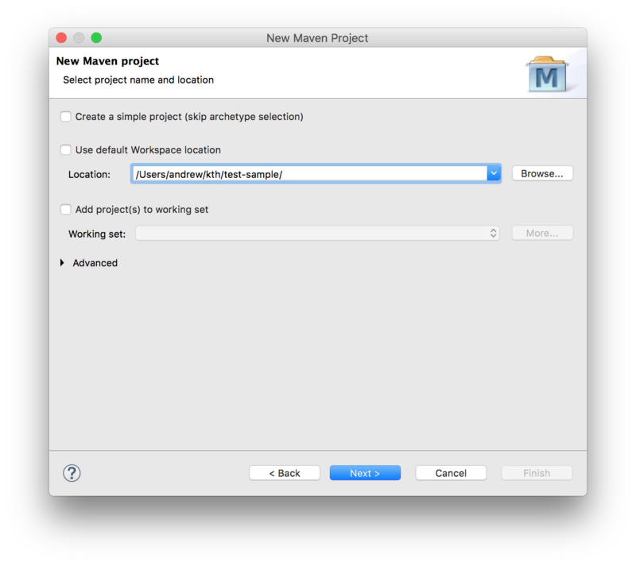
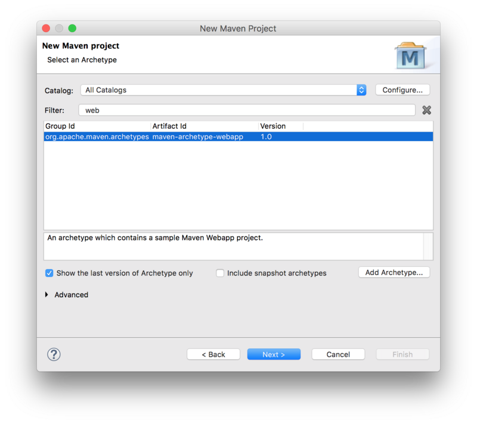
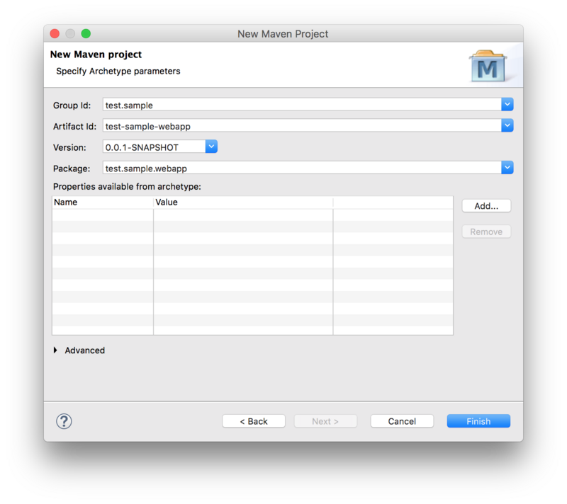

Eclipse Setup
Make sure your environment is setup for OSLC4J development as instructed on Eclipse Setup for Lyo-based Development
Sample Projects
As a complement when following the instructions below, you can find sample projects under the Lyo Adaptor Sample Modelling git repository.
Create an OSLC4J project
The steps below guide you through the necessary steps of creating an Eclipse project with the necessary configurations to develop any OSLC4J adaptor.
In the instructions below, we assume the following parameters, which you will need to adjust for your particular project:
- Eclipse Project Name: adaptor-sample-webapp
- Base Package Name for Java Classes: com.sample.adaptor
We will here only create the code skeleton. The Toolchain Modelling Workshop can then be used to generate the necessary code to become a fully functional adaptor.
Creation of the skeleton consists of 2 steps:
- creating a Maven project from an archetype
- customising the generated project with the Lyo-specific configuration
Creating a Maven project from an archetype
To create a Maven project from an archetype via Eclipse
- select File -> New -> Other
- then select Maven Project under Maven group.
- Leave the Create a simple project checkbox unchecked.
- Uncheck the Use default Workspace location option and point it to the project root
- Press Next

Next, select the maven-archetype-webapp archetype:

Next, Fill in the Group Id, Artefact Id, and the Package Base.
- The Package Base value (
com.sample.adaptoron this page) will be used as a base package for your adaptor code.

You should now have the project in Eclipse and the following folder structure:

Customise the project POM file
We now need to modify the project pom.xml file.
General POM changes
We need to make sure our project uses UTF-8 and JDK 1.8. We will also use properties to define a common version for Lyo Core and Lyo Server packages:
<properties>
<project.build.sourceEncoding>UTF-8</project.build.sourceEncoding>
<project.reporting.outputEncoding>UTF-8</project.reporting.outputEncoding>
<maven.compiler.source>1.8</maven.compiler.source>
<maven.compiler.target>1.8</maven.compiler.target>
<version.lyo.core>2.2.0</version.lyo.core>
<version.lyo.server>2.2.0</version.lyo.server>
</properties>Java EE 6
We require Java EE 6 or higher and JSTL:
<dependency>
<groupId>javax.servlet</groupId>
<artifactId>javax.servlet-api</artifactId>
<version>3.1.0</version>
<scope>provided</scope>
</dependency>
<dependency>
<groupId>javax.servlet</groupId>
<artifactId>jstl</artifactId>
<version>1.2</version>
</dependency>Lyo repositories
an OSLC4J project will use Lyo dependencies that we need to declare. Before we can do that, we need to add the Lyo repository. After that, we are ready to add the dependencies.
<repositories>
<repository>
<id>lyo-releases</id>
<name>lyo-releases repository</name>
<url>https://repo.eclipse.org/content/repositories/lyo-releases/</url>
</repository>
</repositories>SLF4J package dependencies
Lyo uses SLF4J for logging, leaving the choice of the actual logging library to use. We will use the simplest option:
<dependency>
<groupId>org.slf4j</groupId>
<artifactId>slf4j-simple</artifactId>
<version>1.7.21</version>
<scope>runtime</scope>
</dependency>Lyo package dependencies
Lyo dependencies need:
<dependency>
<groupId>org.eclipse.lyo.oslc4j.core</groupId>
<artifactId>oslc4j-core</artifactId>
<version>${version.lyo.core}</version>
</dependency>
<dependency>
<groupId>org.eclipse.lyo.oslc4j.core</groupId>
<artifactId>oslc4j-jena-provider</artifactId>
<version>${version.lyo.core}</version>
</dependency>
<dependency>
<groupId>org.eclipse.lyo.oslc4j.core</groupId>
<artifactId>oslc4j-wink</artifactId>
<version>${version.lyo.core}</version>
</dependency>
<dependency>
<groupId>org.eclipse.lyo.oslc4j.core</groupId>
<artifactId>oslc4j-json4j-provider</artifactId>
<version>${version.lyo.core}</version>
</dependency>OAuth support
Finally, your adaptor might need to includes the experimental support for OAuth:
<dependency>
<groupId>org.eclipse.lyo.server</groupId>
<artifactId>oauth-core</artifactId>
<version>${version.lyo.server}</version>
</dependency>
<dependency>
<groupId>org.eclipse.lyo.server</groupId>
<artifactId>oauth-consumer-store</artifactId>
<version>${version.lyo.server}</version>
<exclusions>
<exclusion>
<groupId>org.slf4j</groupId>
<artifactId>slf4j-log4j12</artifactId>
</exclusion>
</exclusions>
</dependency>
<dependency>
<groupId>org.eclipse.lyo.server</groupId>
<artifactId>oauth-webapp</artifactId>
<version>${version.lyo.server}</version>
<type>war</type>
</dependency>Exclusions are due to the Bug 513477
OAuth is enabled by default. If you want to disable it, open the generated
Applicationclass and do the following changes:
- comment out line
RESOURCE_CLASSES.add(Class.forName("org.eclipse.lyo.server.oauth.webapp.services.ConsumersService"));- comment out line
RESOURCE_CLASSES.add(Class.forName("org.eclipse.lyo.server.oauth.webapp.services.OAuthService"));- change
catch (ClassNotFoundException e)tocatch (Exception e)
OSLC Client support
If you use OAuth or consume any resources in your Adaptor Interface, an OSLC client dependency is needed:
<dependency>
<groupId>org.eclipse.lyo.clients</groupId>
<artifactId>oslc-java-client</artifactId>
<version>${version.lyo.core}</version>
</dependency>Embedded Jetty server for quick debugging
Finally, you should use an embedded servlet container during the debugging to simplify the development process.
Replace the existing <build> entry with the Jetty configuration below, using the following customisations:
adaptor-sample is the context path that can be the same as your eclipse project name (or something more appropriate)
8080 is the port number you want to run the services on.
This will make your adaptor available under the path http://localhost:8080/adaptor-sample
<build>
<plugins>
<plugin>
<groupId>org.eclipse.jetty</groupId>
<artifactId>jetty-maven-plugin</artifactId>
<version>9.3.9.v20160517</version>
<configuration>
<webAppConfig>
<contextPath>/adaptor-sample</contextPath>
</webAppConfig>
<reload>automatic</reload>
<scanIntervalSeconds>5</scanIntervalSeconds>
<systemProperties>
<systemProperty>
<name>jetty.port</name>
<value>8080</value>
</systemProperty>
</systemProperties>
<stopKey />
<stopPort />
</configuration>
</plugin>
</plugins>
</build>Customise the web configuration
Modify the parameters in /src/main/webapp/WEB-INF/web.xml according to the template below.
- Adaptor Sample could be the same as your eclipse project name (or something more appropriate)
- com.sample.adaptor should be the same as the base package name for your project.
- 8080 should match the port number specified in the POM file for Jetty configuration.
<?xml version="1.0" encoding="UTF-8"?>
<web-app xmlns:xsi="http://www.w3.org/2001/XMLSchema-instance"
xmlns="http://java.sun.com/xml/ns/javaee"
xsi:schemaLocation="http://java.sun.com/xml/ns/javaee http://java.sun.com/xml/ns/javaee/web-app_3_0.xsd"
id="WebApp_ID" version="3.0">
<display-name>Adaptor Sample</display-name>
<context-param>
<description>Base URI for the adaptor.</description>
<param-name>com.sample.adaptor.servlet.baseurl</param-name>
<param-value>http://localhost:8080</param-value>
</context-param>
<listener>
<description>Listener for ServletContext lifecycle changes</description>
<listener-class>com.sample.adaptor.servlet.ServletListener</listener-class>
</listener>
<servlet>
<servlet-name>JAX-RS Servlet</servlet-name>
<servlet-class>org.apache.wink.server.internal.servlet.RestServlet</servlet-class>
<init-param>
<param-name>javax.ws.rs.Application</param-name>
<param-value>com.sample.adaptor.servlet.Application</param-value>
</init-param>
<load-on-startup>1</load-on-startup>
</servlet>
<servlet-mapping>
<servlet-name>JAX-RS Servlet</servlet-name>
<url-pattern>/services/*</url-pattern>
</servlet-mapping>
</web-app>Final tips
If you get the error Project configuration is not up-to-date with pom.xml, simply right click on the eclipse project and select Maven-->Update Project ...
Run the adaptor
Once the adaptor is developed, you can run it by selecting Run As --> Maven build ... from the project's context menu, and setting the goal to clean jetty:run-exploded.
You can now access your adaptor from http://localhost:8080/adaptor-sample
- adaptor-sample and 8080 will depend on your particular settings, as instructed above.
OpenApi/Swagger Support (Optional)
Being already a REST web server, an OSLC4J project can relatively easily be documented using OpenApi/Swagger.
The instructions below provide the minimal settings necessary for an OSLC4J project.
Additional suggestions are also provided, given that a typical OSLC4J project might differ from that assumed by OpenApi/Swagger.
One major difference is the fact that OSLC assumes an RDF data model, where resources are defined using OSLC Shapes. Swagger/OpenApi does not explicitly recognise such a model.
The instructions below are based on Swagger Core JAX RS Project Setup 1.5.X, compiled for a typical OSLC4J project, as instructed in this wiki.
Add Maven dependencies
Add the following Swagger dependency to your maven pom.xml file
<dependency>
<groupId>io.swagger</groupId>
<artifactId>swagger-jaxrs</artifactId>
<version>1.5.17</version>
</dependency>Add Swagger-Core's JAX-RS Providers to your Application
Add swagger-core's providers to the OslcWinkApplication class of your server.
public class Application extends OslcWinkApplication {
private static final Set<Class<?>> RESOURCE_CLASSES = new HashSet<Class<?>>();
static
{
...
RESOURCE_CLASSES.add(io.swagger.jaxrs.listing.ApiListingResource.class);
RESOURCE_CLASSES.add(io.swagger.jaxrs.listing.SwaggerSerializers.class);
...
}
...Configure Swagger's Servlet in the web.xml
Add the following to your web.xml:
- swagger.api.basepath depends on your particular settings, as instructed above.
<servlet>
<servlet-name>DefaultJaxrsConfig</servlet-name>
<servlet-class>io.swagger.jaxrs.config.DefaultJaxrsConfig</servlet-class>
<init-param>
<param-name>api.version</param-name>
<param-value>1.0.0</param-value>
</init-param>
<init-param>
<param-name>swagger.api.basepath</param-name>
<param-value>http://localhost:8080/adaptor-sample/services/</param-value>
</init-param>
<load-on-startup>2</load-on-startup>
</servlet>Add OpenApi Annotations (Almost Optional)
The OpenApi documentation can be achieved with as little as adding @Api to each REST/OSLC service in your project. This is detailed in the first step below. While the remaining intructions are optional, they are highly recommended to provide a documentation that can best reflect the OSLC services.
@Api
- For each REST service (ie. OSLC Service), simply add the @Api annotation.
- (OPTIONAL) add the value and description details. The value is used to group the REST methods into common categories, helping in the structuring of the methods in the documentaton. You can give it the same value as that of the @Path annotation, collecting all REST methods for the same service together.
@Api(value = "requirements", description = "OSLC service for resources of type" + "Requirement")
@OslcService(Oslc_rmDomainConstants.REQUIREMENTS_MANAGEMENT_DOMAIN)
@Path("requirements")@ApiOperation (Optional)
For each REST method, add the @ApiOperation Swagger annotation.
Important: In OpenApi, an operation is defined as unique through the combination of its path and method. This means that two C.R.U.D. methods for the same path are not allowed – even if they have different parameters (including Accept and Content-Type annotations).
- Example: Your OSLC Service may define two different Java methods to separately handle HTML and RDF/XML content types. OpenApi will only recognise one of these two methods, while ignoring the other.
- Workaround: Annotate ALL methods that are identified as unique with the complete list of media types in the produces property of the @ApiOperation annotation. This way, the generated documentation correctly indicates the existance of all methods.
@GET
@ApiOperation(value = "GET on Requirement resources",
produces = OslcMediaType.APPLICATION_RDF_XML + ", " + MediaType.TEXT_HTML)
@Path("{requirementId}")
@Produces(OslcMediaType.APPLICATION_RDF_XML)
public Requirement getRequirement(@ApiModel (Optional)
For each Java class that models an OSLC-resource (@OslcName annotation), add an @ApiModel annotation that refers to the Shape of the resource, since a Shape is a more accurate description of the object, than the one automatically generated by Swagger.
@ApiModel(description = "The model below is only a object structure as derived by swagger. For a more accurate RDF Description, refer to the Requirement Resource Shape.")
@OslcNamespace(Oslc_rmDomainConstants.REQUIREMENT_NAMESPACE)
@OslcName(Oslc_rmDomainConstants.REQUIREMENT_LOCALNAME)
@OslcResourceShape(title = "Requirement Resource Shape", describes = Oslc_rmDomainConstants.REQUIREMENT_TYPE)
public class Requirement
...Access the Swagger Documentation
You are done! You should now be able to access the the OpenAPI specification document (yaml file) at:
http://localhost:8080/adaptor-sample/services/swagger.yamlYou can copy the yaml file to a Swagger Editor, to view the API documentation, as well as generate client/Server SDK code for a number of languages and platforms.
But, with a few more steps, you can also integrate Swagger UI into your OSLC server, providing the end-user with an interactive console of the OSLC services.
Integrating Swagger UI
The following steps allows you to integrate Swagger UI into your OSLC server, to provide the end-user with a visual and interactive presentation of the OSLC services.
Download and extract the Swagger UI GitHub project onto your local computer.
Copy the content of the 'dist' folder to '/src/main/webapp/swagger-ui', under your web project.
Edit the
swagger-ui/index.htmlfile, replacing the urlhttp://petstore.swagger.io/v2/swagger.jsonwith the url of your own yaml filehttp://localhost:8080/adaptor-sample/services/swagger.yaml.
You are done! The generated interactive API console can now be accessed via
http://localhost:8080/adaptor-sample/swagger-ui